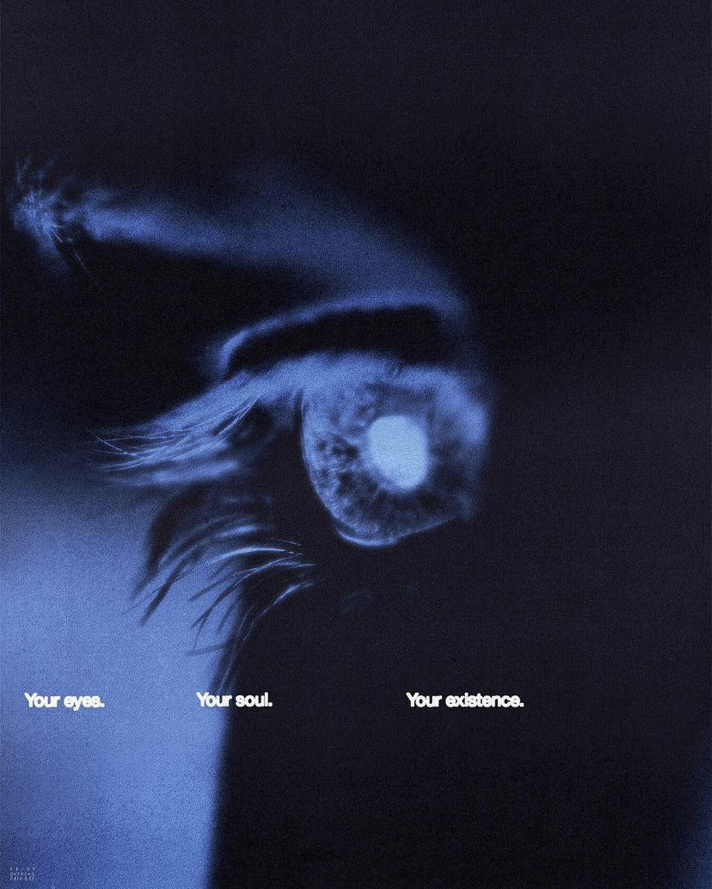

𝐖𝐡𝐲 𝐩𝐞𝐨𝐩𝐥𝐞 𝐜𝐡𝐞𝐚𝐭

eye to eye
𝖱𝖾𝗆𝖾𝗆𝖻𝖾𝗋 𝖻𝖺𝖼𝗄 𝗂𝗇 𝗌𝖼𝗁𝗈𝗈𝗅 𝗐𝗁𝖾𝗇 𝗒𝗈𝗎 𝗎𝗌𝖾𝖽 𝗍𝗈 𝗌𝗂𝗍 𝗇𝖾𝗑𝗍 𝗍𝗈
𝗍𝗁𝖺𝗍 𝗉𝖾𝗋𝗌𝗈𝗇 𝗐𝗁𝗈 𝗎𝗌𝖾𝖽 𝗍𝗈 𝖺𝗅𝗐𝖺𝗒𝗌 𝖼𝗁𝖾𝖺𝗍 𝗈𝗇 𝗍𝖾𝗌𝗍𝗌? 𝖭𝗈 𝗆𝖺𝗍𝗍𝖾𝗋 𝗐𝗁𝖺𝗍,
𝗍𝗁𝖾𝗒'𝖽 𝖺𝗌𝗄 𝗒𝗈𝗎, "𝖧𝖾𝗒, 𝗐𝗁𝖺𝗍 𝖽𝗂𝖽 𝗒𝗈𝗎 𝗀𝖾𝗍 𝖿𝗈𝗋 𝗇𝗎𝗆𝖻𝖾𝗋 𝖿𝗈𝗎𝗋?
𝖶𝗁𝖺𝗍'𝗌 𝗇𝗎𝗆𝖻𝖾𝗋 𝖿𝗈𝗎𝗋?" 𝖣𝗂𝖽 𝗒𝗈𝗎 𝖾𝗏𝖾𝗋 𝗍𝗁𝗂𝗇𝗄 𝗍𝗈 𝗒𝗈𝗎𝗋𝗌𝖾𝗅𝖿, 𝖣𝖺𝗆𝗇.
𝖶𝗁𝗒 𝖺𝗋𝖾 𝗍𝗁𝖾𝗒 𝖺𝗅𝗐𝖺𝗒𝗌 𝗍𝗋𝗒𝗂𝗇𝗀 𝗍𝗈 𝖼𝗁𝖾𝖺𝗍?"
𝖨𝗍'𝗌 𝖻𝖾𝖼𝖺𝗎𝗌𝖾 𝗍𝗁𝖾𝗒 𝗐𝖾𝗋𝖾𝗇'𝗍 𝗉𝗋𝖾𝗉𝖺𝗋𝖾𝖽 𝖿𝗈𝗋 𝗍𝗁𝖾 𝗍𝖾𝗌𝗍.
𝖳𝗁𝖾𝗒 𝗇𝖾𝗏𝖾𝗋 𝗍𝗈𝗈𝗄 𝗍𝗁𝖾 𝗍𝗂𝗆𝖾 𝗍𝗈 𝗌𝗍𝗎𝖽𝗒, 𝗍𝗈 𝗋𝖾𝖺𝖽𝗒 𝗍𝗁𝖾𝗆𝗌𝖾𝗅𝗏𝖾𝗌 𝖿𝗈𝗋 𝗐𝗁𝖺𝗍 𝗐𝖺𝗌 𝖺𝖻𝗈𝗎𝗍 𝗍𝗈 𝗁𝖺𝗉𝗉𝖾𝗇.
𝖠𝖿𝗍𝖾𝗋 𝗋𝖾𝖺𝗅𝗂𝗓𝖾 𝗍𝗁𝖺𝗍, 𝗒𝗈𝗎 𝖽𝗂𝖽𝗇'𝗍 𝗁𝖺𝗏𝖾 𝗍𝗈 𝗊𝗎𝖾𝗌𝗍𝗂𝗈𝗇 𝗐𝗁𝗒 𝗍𝗁𝖾𝗒'𝗋𝖾 𝗒𝗈𝗎 𝗍𝗋𝗒𝗂𝗇𝗀 𝗍𝗈 𝖼𝗁𝖾𝖺𝗍,
𝖻𝖾𝖼𝖺𝗎𝗌𝖾 𝗒𝗈𝗎 𝗄𝗇𝖾𝗐.
𝖳𝗁𝖾𝗒'𝗋𝖾 𝗎𝗇𝗉𝗋𝖾𝗉𝖺𝗋𝖾𝖽 𝖿𝗈𝗋 𝗍𝗁𝖾 𝗍𝖾𝗌𝗍.
𝖸𝗈𝗎 𝖽𝗂𝖽𝗇'𝗍 𝖻𝗅𝖺𝗆𝖾 𝗒𝗈𝗎𝗋𝗌𝖾𝗅𝖿. 𝖸𝗈𝗎 𝗇𝗈 𝗅𝗈𝗇𝗀𝖾𝗋 𝖺𝗌𝗄𝖾𝖽 𝗒𝗈𝗎𝗋𝗌𝖾𝗅𝖿,
"𝖶𝗁𝗒 𝖺𝗋𝖾 𝗍𝗁𝖾𝗒 𝖼𝗁𝖾𝖺𝗍𝗂𝗇𝗀?"
𝖲𝗈 𝗐𝗁𝗒 𝖽𝗈 𝗒𝗈𝗎 𝖽𝗈 𝗍𝗁𝖾 𝖾𝗑𝖺𝖼𝗍 𝗈𝗉𝗉𝗈𝗌𝗂𝗍𝖾 𝗂𝗇 𝗋𝖾𝗅𝖺𝗍𝗂𝗈𝗇𝗌𝗁𝗂𝗉𝗌?
𝖶𝗁𝖾𝗇 𝗌𝗈𝗆𝖾𝖻𝗈𝖽𝗒 𝖼𝗁𝖾𝖺𝗍𝗌 𝗈𝗇 𝗒𝗈𝗎,
𝗐𝗁𝗒 𝖽𝗈 𝗒𝗈𝗎 𝗍𝖺𝗄𝖾 𝗍𝗁𝖾 𝖻𝗅𝖺𝗆𝖾 𝖺𝗇𝖽 𝗇𝗈𝗍 𝖿𝖺𝗎𝗅𝗍 𝗍𝗁𝖾𝗆?
𝖸𝗈𝗎𝗋 𝗉𝖺𝗋𝗍𝗇𝖾𝗋 𝗐𝖺𝗌 𝗍𝗁𝖾 𝗈𝗇𝖾 𝗐𝗁𝗈 𝖽𝗂𝖽𝗇'𝗍 𝗉𝗋𝖾𝗉𝖺𝗋𝖾 𝗍𝗈
𝗁𝖺𝗇𝖽𝗅𝖾 𝗍𝗁𝖾𝗆𝗌𝖾𝗅𝗏𝖾𝗌 𝗉𝗋𝗈𝗉𝖾𝗋𝗅𝗒 𝗐𝗁𝖾𝗇 𝗍𝗁𝖾 𝗋𝖾𝗅𝖺𝗍𝗂𝗈𝗇𝗌𝗁𝗂𝗉 𝗐𝖾𝗇𝗍 𝗍𝗁𝗋𝗈𝗎𝗀𝗁 𝖺 𝗍𝖾𝗌𝗍.
𝖤𝗏𝖾𝗋𝗒 𝗋𝖾𝗅𝖺𝗍𝗂𝗈𝗇𝗌𝗁𝗂𝗉 𝗂𝗌 𝗀𝗈𝗂𝗇𝗀 𝗍𝗈 𝖻𝖾 𝗍𝖾𝗌𝗍𝖾𝖽.
𝖳𝗁𝖺𝗍 𝖽𝗈𝖾𝗌𝗇'𝗍 𝗆𝖾𝖺𝗇 𝗒𝗈𝗎'𝗏𝖾 𝗀𝗈𝗍 𝗍𝗈 𝖼𝗁𝖾𝖺𝗍!
𝖲𝗈 𝗐𝗁𝖾𝗇 𝗉𝖾𝗈𝗉𝗅𝖾 𝖼𝗁𝖾𝖺𝗍 𝗈𝗇 𝗒𝗈𝗎,
𝗎𝗇𝖽𝖾𝗋𝗌𝗍𝖺𝗇𝖽 𝗍𝗁𝖺𝗍 𝗂𝗍 𝗁𝖺𝗌 𝗇𝗈𝗍𝗁𝗂𝗇𝗀 𝗍𝗈 𝖽𝗈 𝗐𝗂𝗍𝗁 𝗒𝗈𝗎 𝖺𝗇𝖽 𝖾𝗏𝖾𝗋𝗒𝗍𝗁𝗂𝗇𝗀
𝗍𝗈 𝖽𝗈 𝗐𝗂𝗍𝗁 𝗍𝗁𝖾𝗆 𝗇𝗈𝗍 𝖻𝖾𝗂𝗇𝗀 𝗉𝗋𝖾𝗉𝖺𝗋𝖾𝖽 𝖿𝗈𝗋 𝗍𝗁𝖾 𝗍𝖾𝗌𝗍𝗌 𝗍𝗁𝖺𝗍 𝗋𝖾𝗅𝖺𝗍𝗂𝗈𝗇𝗌𝗁𝗂𝗉𝗌 𝖻𝗋𝗂𝗇𝗀.